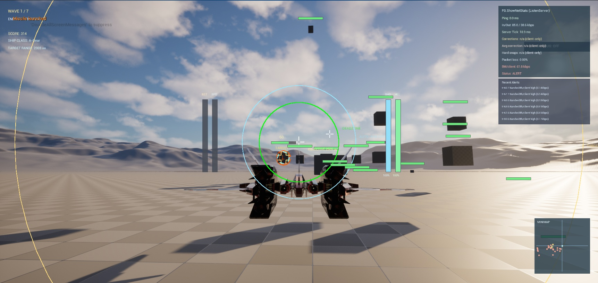

FlyingGame Follow-Up: Multiplayer Combat Breakthrough (Missile Visuals Next)
This is a direct follow-up to our last FlyingGame post, "Contract-Driven Execution with Codex". That post was about process discipline. Today proved why that discipline matters: even after a hard, frustrating day, we switched to a clear implementation plan and suddenly progress accelerated.
Short version: multiplayer combat is now truly alive.

What Landed Today
- Client gunfire now applies damage server-side, not only cosmetic local effects.
- Missile hits apply damage and damage numbers/feedback are visible in multiplayer tests.
- A real server-authority cooldown bug was fixed for remote clients (tick/update order issue before input gating).
- Gunfire fallback hit logic was added so edge-case trace/target drift no longer drops valid shots.
- Enemy/objective runtime mesh + collision setup was hardened to avoid invisible logic-only behavior.
We also improved the workflow itself: tighter build/live-coding rules, standardized multiplayer test defaults, and better structured error tracking in docs/ErrorFixNotes.md.
The One Remaining Known Issue
The big blocker left is now clear and isolated: missile visuals are still inconsistent on some clients. Important detail: this is no longer a combat logic blocker. Damage works; visibility is the unstable part.
That is a good place to be. We are no longer asking "can clients fight at all?" We are polishing a cosmetic replication path.
Why This Day Felt Different
Yesterday hurt. We burned time, bounced around, and felt stuck. Today was the opposite: we spent serious time on a real implementation plan first, then executed cleanly. Result: fewer random detours, faster validation loops, and real multiplayer milestones in one session.
Core takeaway: clear plan first, then iterate fast. The plan did not slow us down — it unlocked momentum.
Next step is straightforward: finish deterministic missile visual replication so what players see fully matches what the server already resolves.